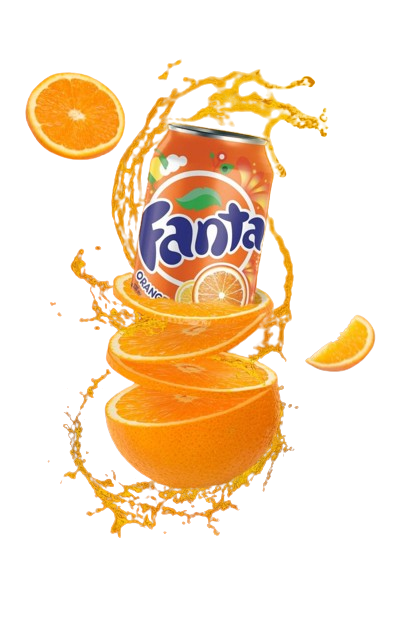

Don't look for Soda
Get Fanta
The cool sweetness of sugar and orange flavor give you a feeling
of lightness
refreshment when enjoying.
Fanta orange flavored carbonated beverage is
a refreshing
drink that helps supplement vitamins and
minerals that are good for the body.
